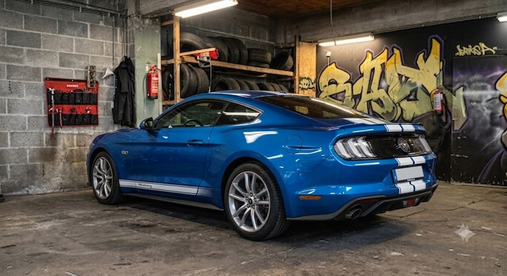
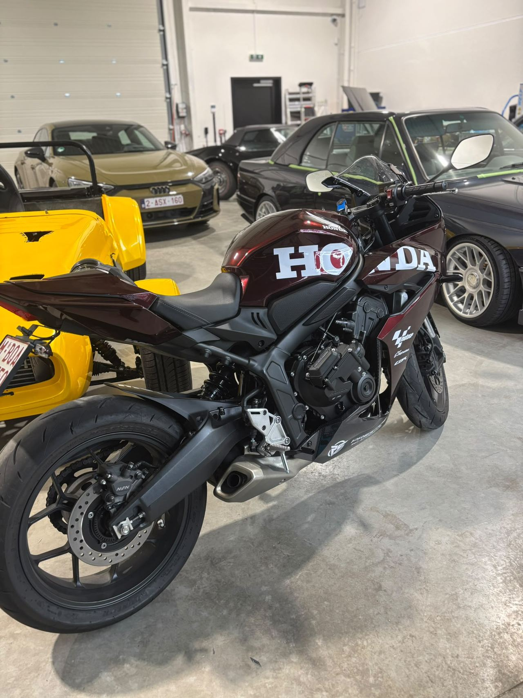
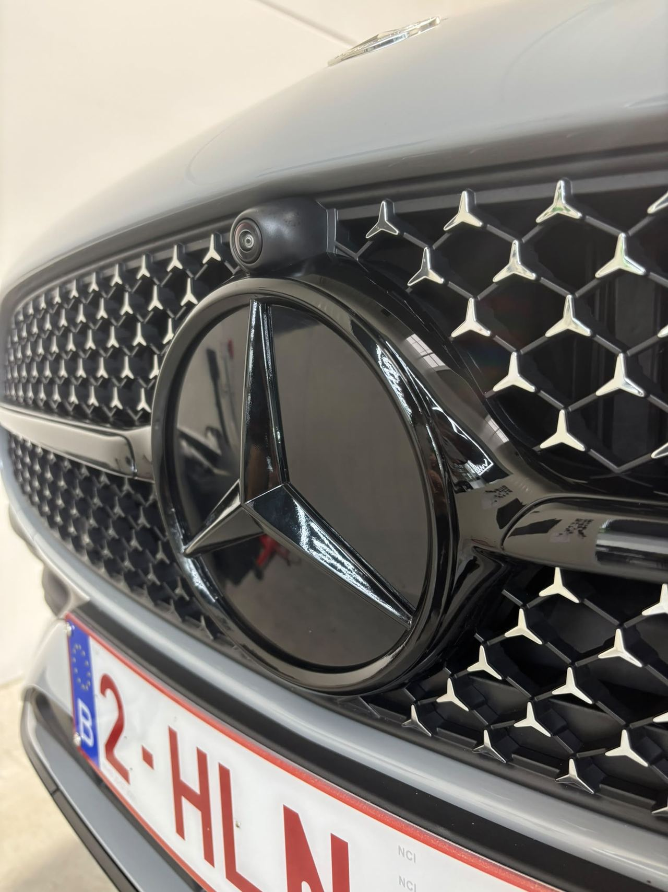
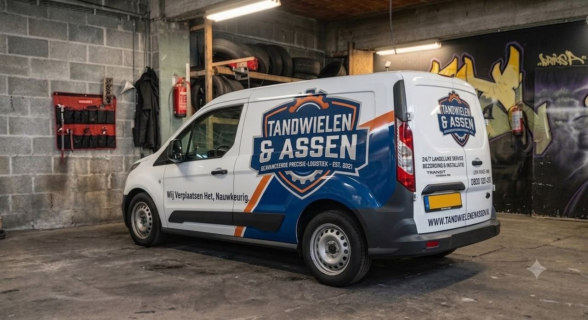

Onze diensten
Zes disciplines, één doel: jouw merk laten opvallen. Ontdek hieronder wat Gilvora Signmaking voor jou kan betekenen.

01Striping
Accentstrepen en coachlines in vinylfolie, volledig op maat qua kleur, breedte en plaatsing.
Meer info 02Belettering
Logo's, teksten en pictogrammen op voertuigen, etalages of gevels — gesneden of geprint.
Meer info
03Carwrap
Volledige of gedeeltelijke voertuigwraps: kleurverandering, folietexturen en bescherming van de originele lak.
Meer info 04Gevelreclame
Lichtreclame, lichtbakken, letters en panelen die je zaak dag en nacht laten opvallen.
Meer info
05Chrome delete
Chromen sierlijsten, grilles en accenten overgewrapt in mat of glans zwart voor een strakkere look.
Meer info
06Commerciële wrap
Bedrijfswagens en wagenparken consequent gebrand volgens jouw huisstijl — rijdende reclame.
Meer infoVan idee tot plaatsing
Welke dienst je ook kiest, dit traject doorlopen we samen.
Kennismaking
We bespreken je wensen, je merk en waar het ontwerp op aangebracht wordt.
Ontwerp
Wij werken een ontwerp op maat uit, met jouw feedback mee verwerkt.
Productie
Materialen en prints worden met precisie voorbereid in ons atelier.
Plaatsing
Vakkundige plaatsing door ons team, met oog voor het kleinste detail.